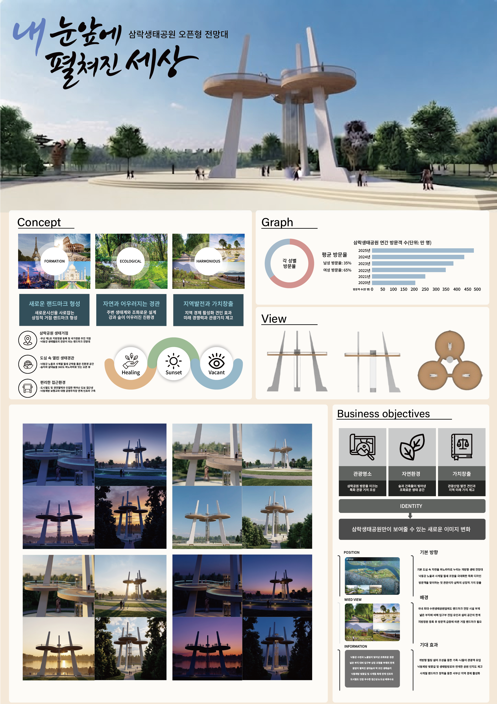
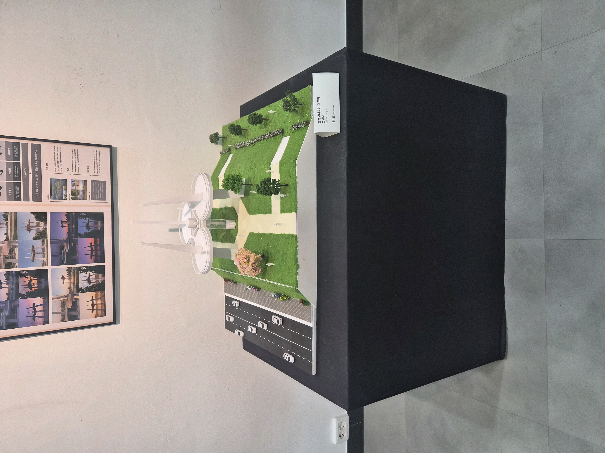

PROJECT 01
Spatial & Environmental Architecture Design
공간디자인 : 삼락생태공원 오픈형 전망대
1. 디자인 판넬 전체보기 (Full Panel Overview)

2. 판넬 핵심 디자인 특징 분석 (Detail Breakdown)
01 / CONCEPT
자연과 어우러지는 랜드마크
새로운 시선을 사로잡는 수평·수직적 관람 거점 형성. 자연 생태계와의 조화로운 설계로 낙동강과 숲이 어우러진 친환경 조형성을 강조했습니다.
02 / ANALYSIS
방문객 데이터 & 입면 분석
삼락생태공원 방문객 수 추이 및 성별 비중 분석 데이터를 바탕으로, 일몰과 휴식을 모두 수용할 수 있는 삼각 세그먼트 구조를 도출했습니다.
03 / OBJECTIVES
지역 발전과 가치 창출
관광명소화, 자연경관 보존, 지역 경제 견인의 3대 목표를 수립하여 삼락생태공원만의 독창적인 아이덴티티를 확립했습니다.
3. 실물 모형 전시 (Exhibition Mock-up)

▲ 삼락생태공원 오픈형 전망대 3D 렌더링 축척 모형 전시 스케일